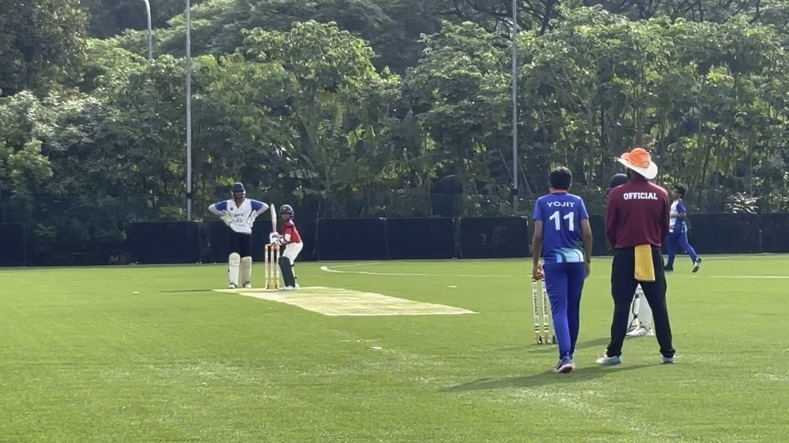
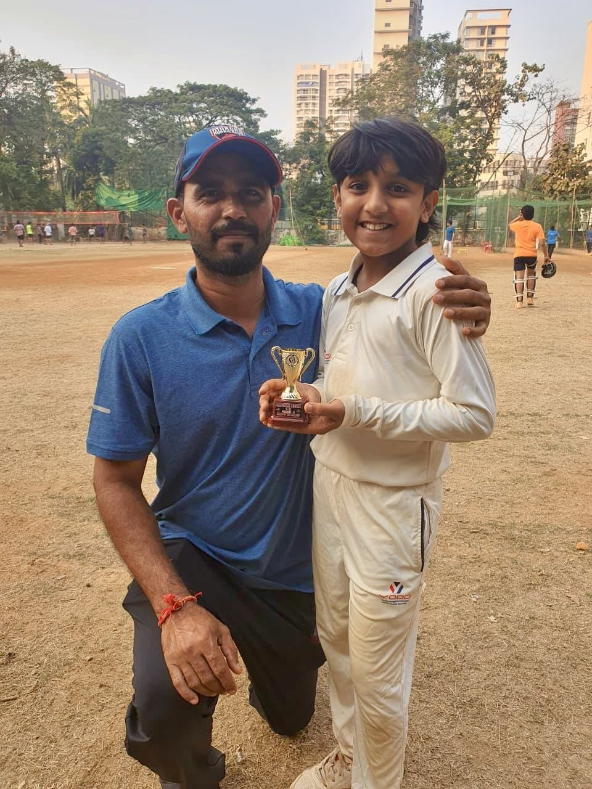
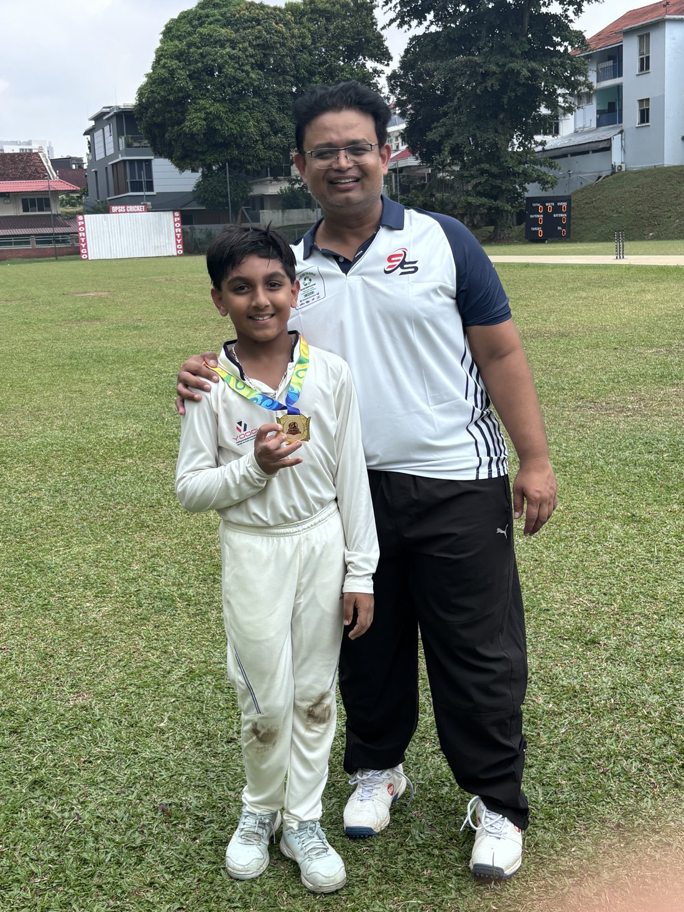

In the middle


The seasons in pictures
Two awards, one match day

At the crease
3Cricket League award

Player of the match
Medal presentation

Award day
Before play
With his coach
Squad, Dulwich College
In the field
On presentation day